Do SARESP
para o mundo.
Como uma avaliação da rede estadual abriu caminho para uma experiência do outro lado do planeta.
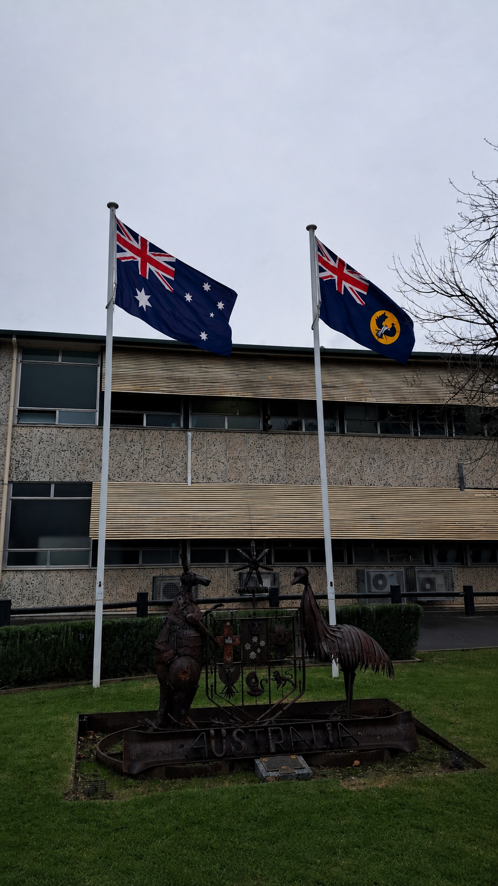
O SARESP é mais do que uma prova.
O SARESP — Sistema de Avaliação de Rendimento Escolar do Estado de São Paulo — é uma avaliação externa de larga escala aplicada pela Seduc-SP. Ele produz indicadores sobre a aprendizagem e orienta políticas públicas de educação.
Entender a aprendizagem
O SARESP identifica o que os estudantes aprenderam e onde ainda é preciso avançar.
Subsidiar políticas públicas
Os resultados apoiam decisões pedagógicas e ações de recuperação e aprofundamento.
O SARESP é aplicado anualmente pela Secretaria da Educação do Estado de São Paulo (Seduc-SP).
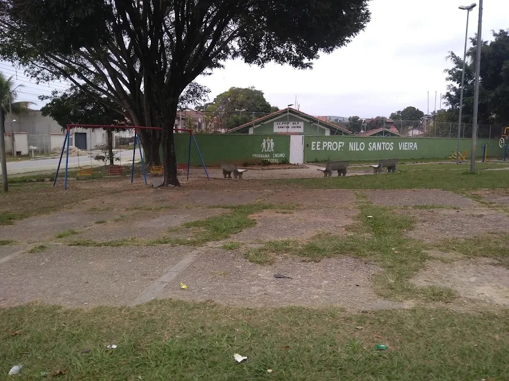
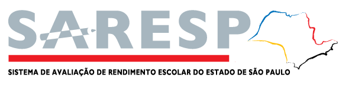
◇ espaço para logo oficial verificado do SARESP / SEDUC-SPO SARESP abre portas. O Prontos pro Mundo atravessa o oceano.
O Prontos pro Mundo é o programa de intercâmbio internacional gratuito do Governo de São Paulo. Ele leva estudantes da rede pública para uma experiência de três meses em high school (equivalente ao Ensino Médio) em países de língua inglesa.
- Intercâmbio 100% gratuito: passagens, hospedagem, aulas e traslados custeados pela Seduc-SP.
- Critérios de seleção definidos em edital, que podem incluir desempenho acadêmico e proficiência em inglês.
- Destinos como Austrália, Canadá, Irlanda e Nova Zelândia.
Requisitos e critérios podem mudar a cada edição. Consulte sempre o edital oficial no site da Seduc-SP.
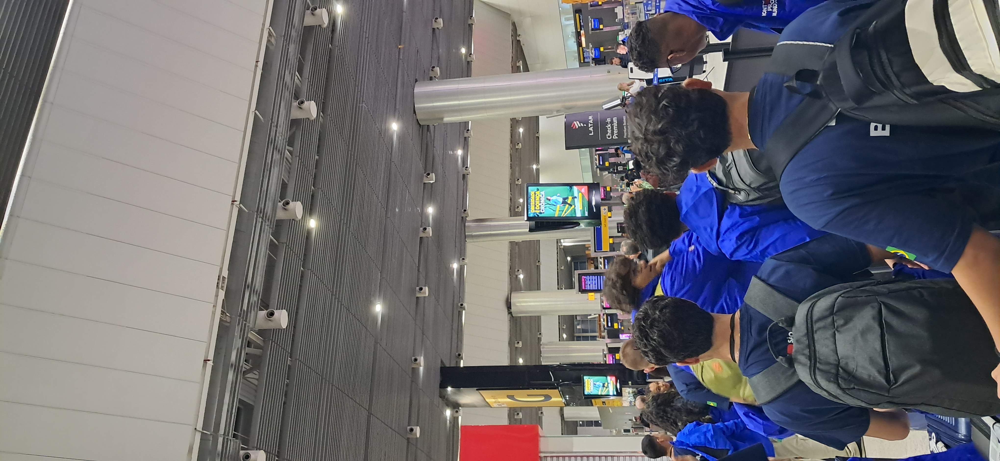
De estudante a intercambista.
Sou Luis Guilherme, estudante do 2ºA da E.E. Nilo Santos Vieira, em Guaratinguetá. O SARESP foi o ponto de partida da minha trajetória até a Austrália.
Estudar, participar e aproveitar as oportunidades da escola.
Preparar a documentação e cumprir as etapas oficiais.
Embarque rumo a Adelaide, na Austrália.
Retorno ao Brasil com novas experiências.
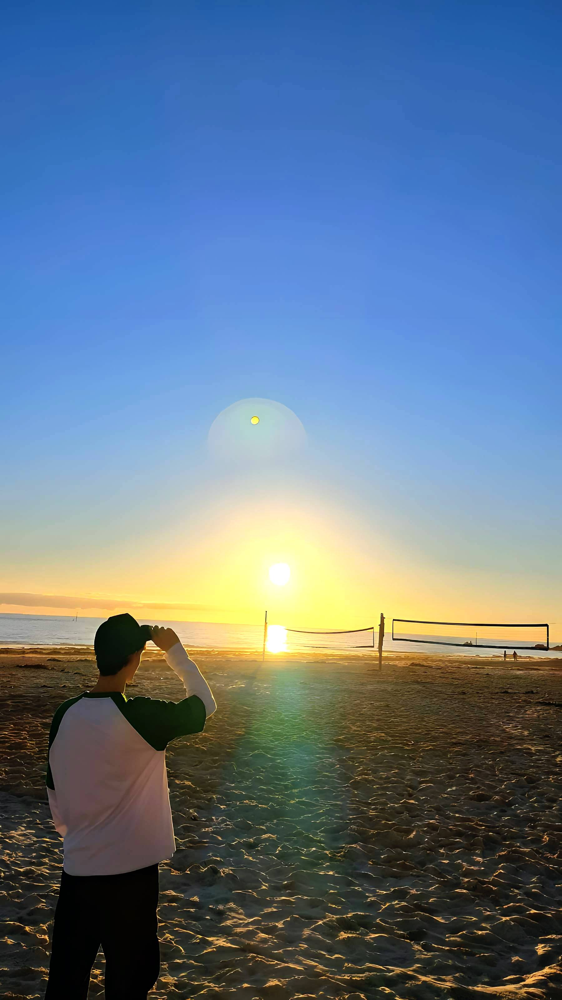
Três conexões.
Outro mundo.
A viagem começou no Brasil e atravessou continentes até chegar ao sul da Austrália.
Foi minha primeira grande viagem internacional — uma experiência que começou muito antes de chegar à escola australiana.
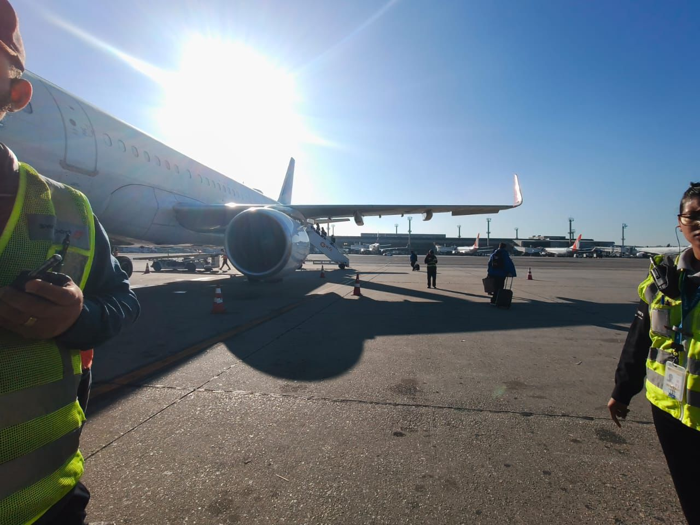
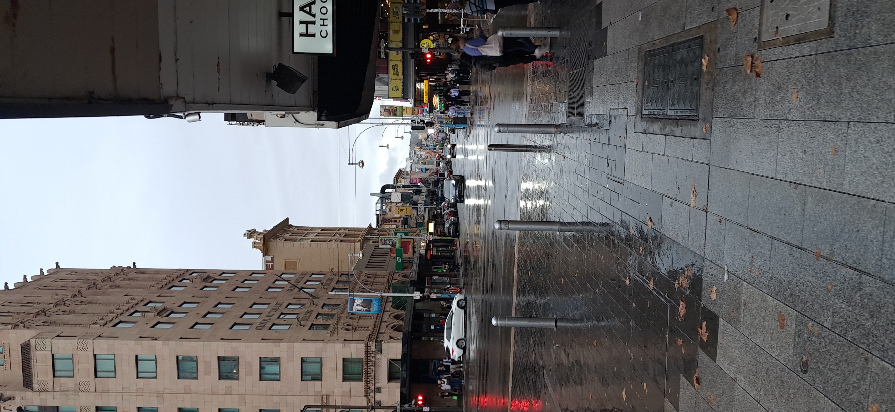
Uma escola nova.
Outra perspectiva.
Em Adelaide, estudei na Blackwood High School — uma escola pública governamental localizada nos arredores de Adelaide, na Austrália do Sul, que atende do 7º ao 12º ano.
Inglês no cotidiano
Usar o idioma dentro e fora da sala de aula.
Novas rotinas
Conhecer práticas e ambientes diferentes dos que eu já conhecia.
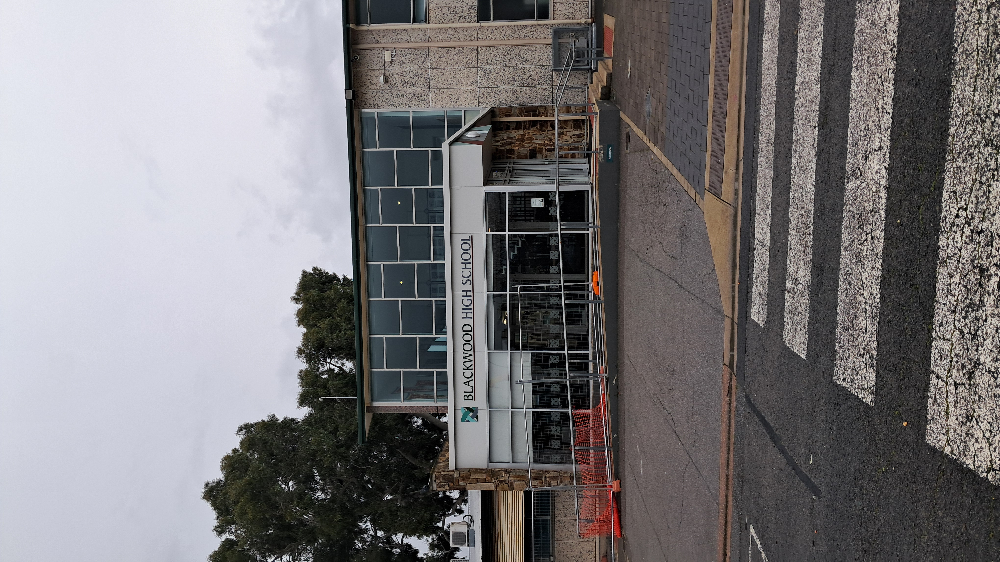
O intercâmbio acontece também fora da aula.
A convivência diária, a cidade e as pequenas situações do cotidiano também fazem parte de conhecer outro país.
- Conviver com a família anfitriã.
- Conhecer lugares e hábitos diferentes.
- Praticar o inglês em situações reais.
- Aprender a se adaptar a uma nova rotina.
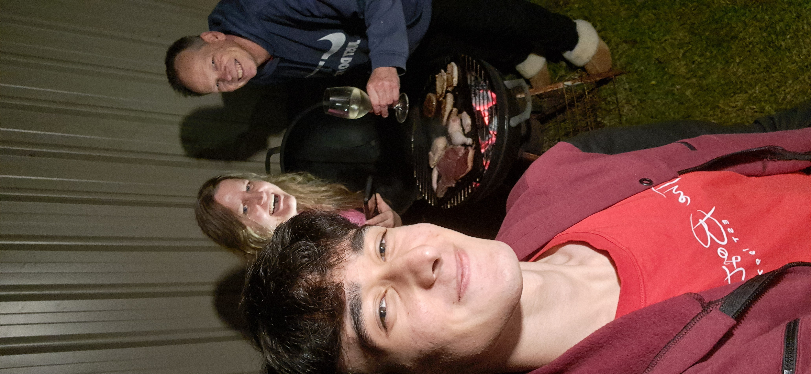
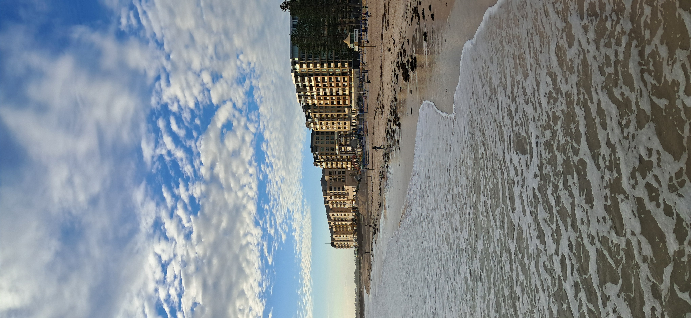
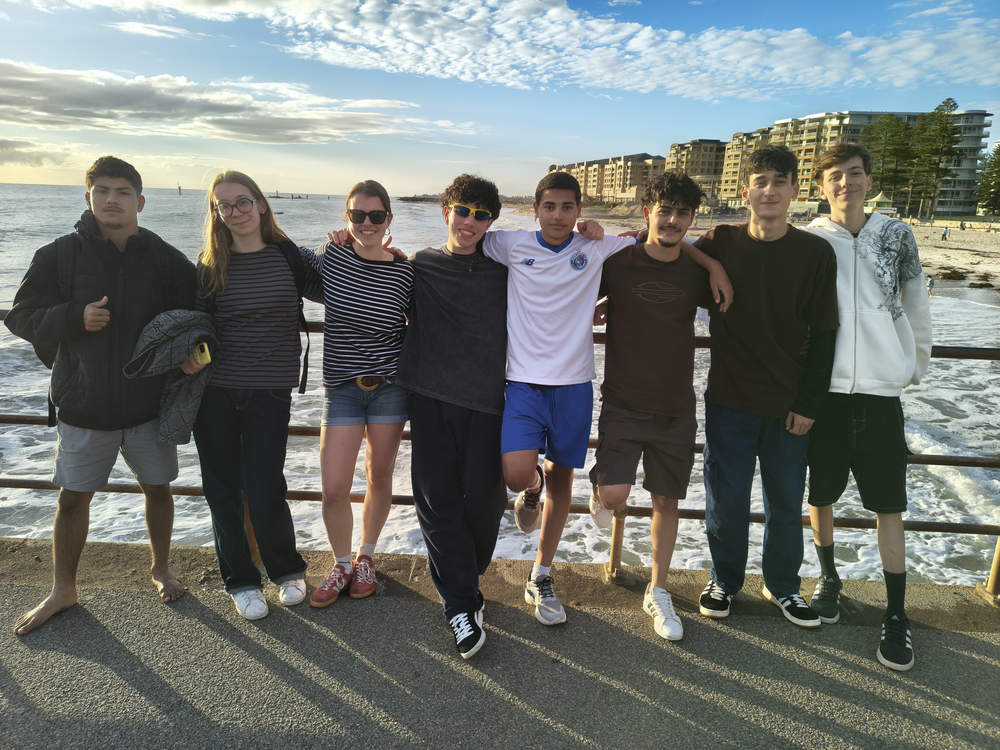
Voltei com mais do que fotografias.
Viver em outro país pode ampliar a forma como a gente enxerga a escola, o idioma e o próprio futuro.
Inglês
Praticar o idioma em contextos reais.
Autonomia
Assumir responsabilidades em uma rotina diferente.
Cultura
Aprender convivendo com outros costumes.
Perspectiva
Perceber novas possibilidades para o futuro.
Leve o SARESP a sério. Leve seu futuro também.
O SARESP é uma das portas de entrada para oportunidades como o Prontos pro Mundo. O melhor ponto de partida é fazer bem o que está ao seu alcance, todos os dias.
- Revise os conteúdos e tire suas dúvidas.
- Leia os enunciados com atenção.
- Administre o tempo durante a prova.
- Estude com constância, não só na véspera.
- Procure oportunidades e leia os requisitos oficiais.
O SARESP é um dos critérios do Prontos pro Mundo, mas não o único. Cada edição tem regras próprias — confira o edital oficial.
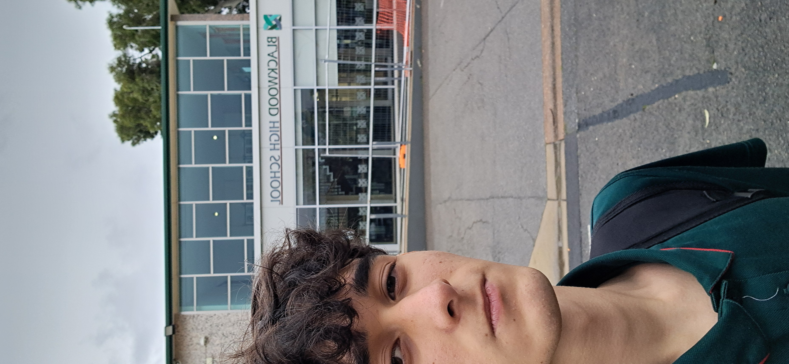
Uma oportunidade pode começar no SARESP.
Estude, descubra as oportunidades e esteja preparado para quando uma porta se abrir.
Obrigado pela atenção.
Luis Guilherme Batista Nunes · E.E. Nilo Santos Vieira · Guaratinguetá, SP
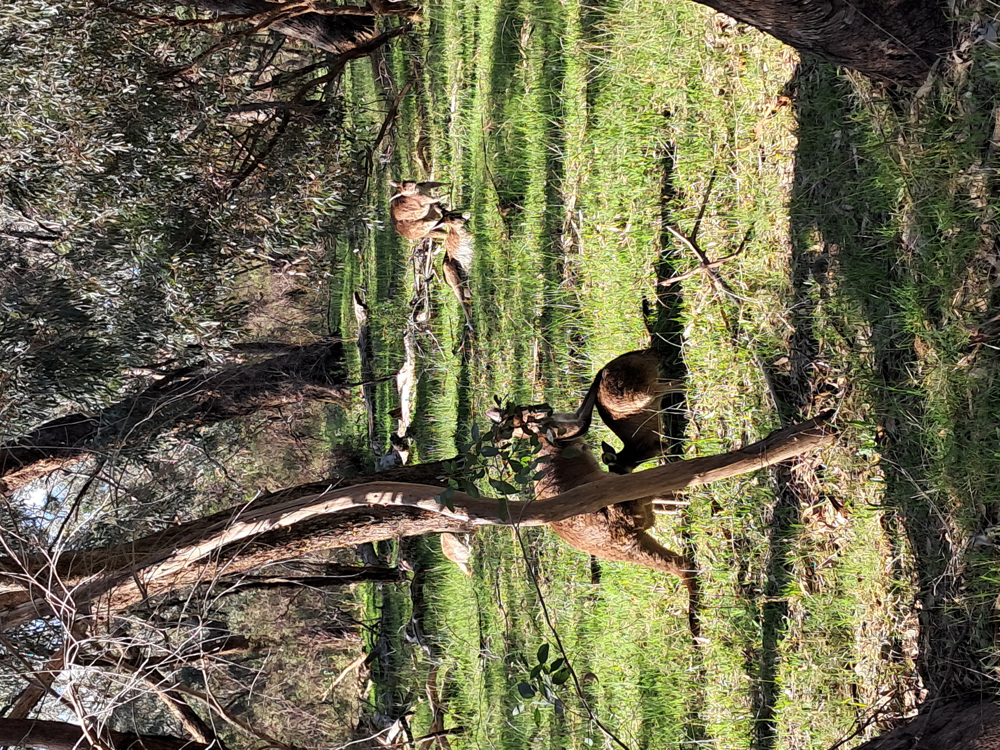